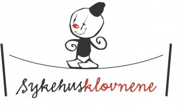

Prøverom: Sykehusklovnene
- Dato:
- 19.11.2009 til 22.11.2009
- Start kl :
- 10:00
- Slutt kl :
- 16:00
- Adresse:
- Norsk Skuespillersenter, Oslo
 Sykehusklovnene gjennomførte Prøverom der de arbeidet med Anne-Marie Möller fra Stockholm.
Sykehusklovnene gjennomførte Prøverom der de arbeidet med Anne-Marie Möller fra Stockholm.
"Sykehusklovnene har gjennom mange år skapt improvisert scenekunst på sykehus i dialog med barnet vi møter. Vi har brukt hver vår genuine teaterklovn som et verktøy for å stimulere det friske med sin lydhørhet, improvisasjon og spontanitet. De siste årene har vi vokst fra en til seks skuespillere, alle med lang fartstid innen scenekunst.
Vi ønsker å trekke inn kompetanse innen maskearbeid - klovn samt kompetanse fra sykehuset i prøverommet for å forske videre på vårt kunstneriske arbeid på sykehus, spesielt med vekt på duoarbeid, da vi jobber to og to i møtet med barnet og sin verden.
Vi har vært så heldig å få tilbake Anne -Marie Möller fra Stocholm for å jobbe kunstnerisk med oss. Hun har ledet sykehusklovnene ved Astrid Lindgren sykehus, Glädjeverkstan, i over 10 år og er en av de mest erfarne teaterklovnene i Sverige bla. med gruppen Kokovsky og Pajette.
På sykehuset jobber vi i nuet og med det friske som fokus, men kommer i situasjoner som krever spesiell menneskelig kapasitet. Vi inviterer BUP fra Rikshospitalet for å se på vårt arbeid som scenekunstnere med andre briller."
Det var åpne plasser tilgjengelig.
{kind=link}
{kind=link}